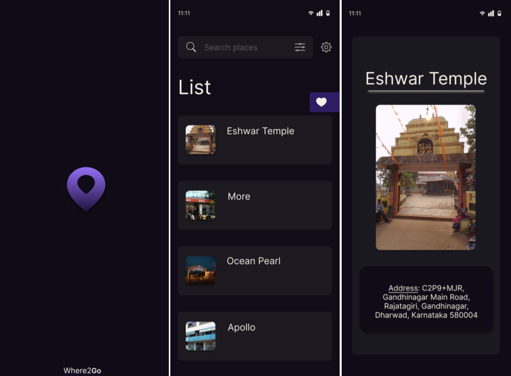

Where2Go
Developed Where2Go, a mobile application aimed at helping SDMCET students, especially freshers and those new to Dharwad, easily discover essential local resources. The app enables users to find nearby and distant spots such as grocery stores, stationery shops, food joints, and other daily essentials with ease. Designed with Figma for an intuitive user experience and built using Flutter with Firebase integration, the application provides real-time data and smooth navigation. By simplifying local discovery, Where2Go enhances convenience and helps students quickly adapt to their new surroundings.